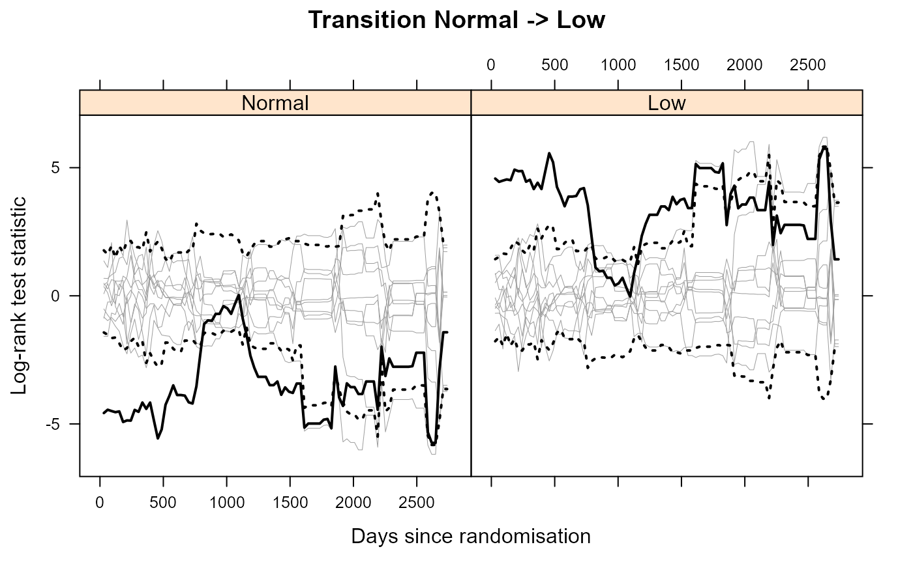
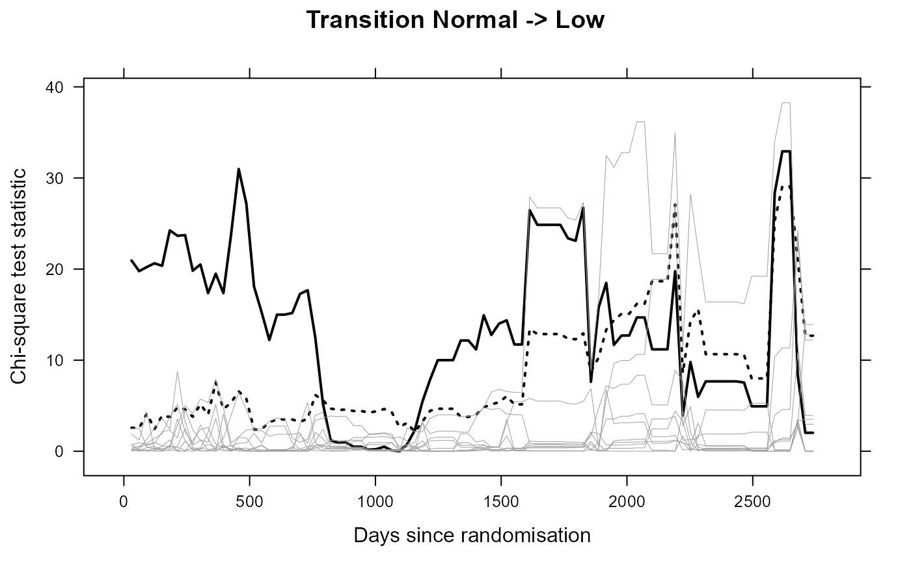

Log-rank based test for the validity of the Markov assumption
MarkovTest( data, id, formula = NULL, transition, grid, B = 1000, fn = list(function(x) mean(abs(x), na.rm = TRUE)), fn2 = list(function(x) mean(x, na.rm = TRUE)), min_time = 0, other_weights = NULL, dist = c("poisson", "normal") )
| data | Multi-state data in |
|---|---|
| id | Column name in |
| formula | Right-hand side of the formula. If NULL will fit with no covariates (formula="1" will also work), offset terms can also be specified. |
| transition | Transition number of the transition to be tested (in the
transition matrix as attribute to |
| grid | Grid of time points at which to compute the statistic |
| B | Number of wild bootstrap replications to perform |
| fn | A list of summary functions to be applied to the individual zbar traces (or a list of lists) |
| fn2 | A list of summary functions to be applied to the overall chi-squared trace |
| min_time | The minimum time for calculating optimal weights |
| other_weights | Other (than optimal) weights can be specified here |
| dist | Distribution of wild bootstrap random weights, either "poisson" for centred Poisson (default), or "normal" for standard normal |
MarkovTest returns an object of class "MarkovTest", which is a list with the following items:
Summary statistic for each of the starting states
Overall chi-squared summary statistic
P-values corresponding to each of the summary statistics for each starting state
P-values for overall chi-squared summary statistic
Bootstrap summary statistics for each of the starting states
Individual traces for each of the starting states
The number of events after time s for each s in the grid
Number of patients who are ever at risk of the transition of interest
Pointwise 2.5 and 97.5 quantile limits for each of the traces
Trace of the chi-squared statistic
Individual values of the chi-squared statistic trace for the wild bootstrap samples
Individual values of the log-rank z statistic traces for the wild bootstrap samples
Estimated covariance matrix between the log-rank statistics at each grid point
The transition number tested
The from state of the transition tested
The to state of the transition tested
The number of wild bootstrap replications
The distribution used in the wild bootstrap
Set of qualifying states corresponding to the components of the above traces
Fitted coxph object
List of functions applied to state-specific trace
List of functions applied to overall trace
Function MarkovTest performs the log-rank test described in Titman & Putter (2020). Function optimal_weights_matrix implements the optimal weighting for the state-specific trace. Function optimal_weights_multiple implements the optimal weighting for the chi-squared trace.
Titman AC, Putter H (2020). General tests of the Markov property in multi-state models. Biostatistics To appear.
Andrew Titman a.titman@lancaster.ac.uk, transported to mstate by Hein Putter H.Putter@lumc.nl
# Example provided by the prothrombin data data("prothr") # Apply Markov test to grid of monthly time points over the first 7.5 years year <- 365.25 month <- year / 12 grid <- month * (1 : 90) # Markov test for transition 1 (wild bootstrap based on 25 replications, 1000 recommended) MT <- MarkovTest(prothr, id = "id", transition = 1, grid = grid, B = 25)#> Warning: 64 lines with Tstart <= Tstop, have been removed before applying tests!# Plot traces plot(MT, grid, what="states", idx=1:10, states=rownames(attr(prothr, "trans")), xlab="Days since randomisation", ylab="Log-rank test statistic", main="Transition Normal -> Low")plot(MT, grid,what="overall", idx=1:10, xlab="Days since randomisation", ylab="Chi-square test statistic", main="Transition Normal -> Low")# Example using optimal weights and adjustment for covariates oweights_fun <- optimal_weights_matrix(prothr, id = "id", grid=grid, transition = 1, other_weights=list( function(x) mean(abs(x),na.rm=TRUE), function(x) max(abs(x),na.rm=TRUE))) oweights_chi <- optimal_weights_multiple(prothr, id = "id", grid=grid, transition = 1) # Formula in MarkovTest only works for continuous covariates and dummy coded variables # No factors allowed prothr$prednisone <- as.numeric(prothr$treat == "Prednisone") MT <- MarkovTest(prothr, id = "id", formula = "prednisone", transition = 1, grid = grid, B = 25, fn = oweights_fun, fn2 = list( function(x) weighted.mean(x, w=oweights_chi, na.rm=TRUE), function(x) mean(x, na.rm=TRUE), function(x) max(x, na.rm=TRUE)))#> Warning: 64 lines with Tstart <= Tstop, have been removed before applying tests!